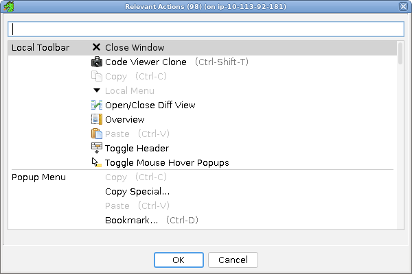

Keyboard Navigation
Component Traversal
Ghidra supports standard keyboard navigation for traversing component focus cycles within each window. In general, TAB and <CTRL> TAB will transfer focus to the next component. And <SHIFT> TAB and <CTRL><SHIFT>TAB will transfer focus to the previous component in the cycle. TAB and <SHIFT>TAB do not always work as they are sometimes used by individual components such as text components, but the <CTRL> versions should work universally.
Ghidra also provides some handy shortcut keys for navigation:
- <CTRL>F3 - Transfer focus to the next window or dialog.
- <CTRL><SHIFT>F3 - Transfer focus to the previous window or dialog.
- <CTRL>J - Transfer focus (Jump) to the next component provider (titled component).
- <CTRL><SHIFT>J - Transfer focus (Jump) to the previous component provider.
Actions
Global menus can be reached using the various accelerator keys such as <ALT>F to access the File menu.
Context menus can be invoked using the <SHIFT>F10 key or the dedicated context menu key available on some keyboards.
Toolbar actions currently can't be directly accessed via the keyboard unless a keybinding is assigned to them.
Actions Dialog
The Actions Dialog displays a list of all actions (or commands) relevant to the currently focused component window or dialog and allows the user to select and invoke any valid, enabled action using either the mouse or keyboard.
The dialog displays a list of available actions, grouped into categories indicating from where the action is normally invoked. Actions that are not enabled (and therefore can't be invoked) are displayed as faded.
Initially, the dialog shows just the local toolbar and menu items for the currently focused component, along with all relevant popup and keyboard actions. Repeatedly pressing the keybinding assigned to this action (default is <CTRL> 3) will show additional, less relevant actions.
Displayed actions in the list can be selected via the mouse or by using the up/down arrows to move the current selection. Pressing the OK button or pressing the <ENTER> key will cause the dialog to close and the action to be invoked.
Also, the list can be filtered by typing in the provided text box.
This dialog can be invoked using its assigned keybinding (default is <CTRL> 3).
Keywords: find actions, system actions, tool actions, component actions, local actions, global actions, keyboard actions, list actions, actions list, choose actions, select actions, display actions, show actions.